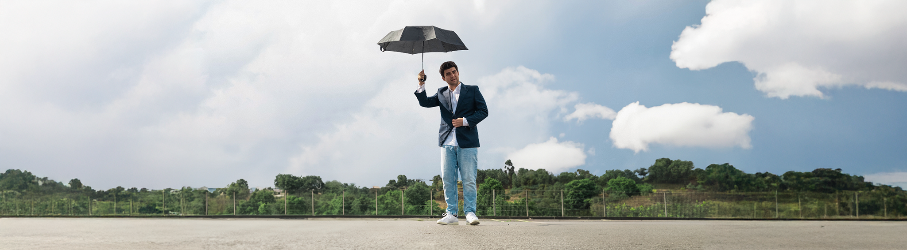

Tomás Oliveira, Viseense fugido para Coimbra, é designer por formação e músico por teimosia. Assina composição, produção e um pequeno arsenal de instrumentos num projeto em nome próprio cuja sonoridade típica cruza o acústico e o elétrico, entre o pop, o rock e o indie — difícil de rotular, mas fácil de reconhecer.
Estabelece a fundação do projeto com a energia acústica do EP “Fora da Caixa” (2022), ao qual se segue o álbum de estreia “Lamiré” (2023), resultado de dois anos de estúdio e já com mais de 10 mil streams acumuladas nas plataformas. Descrito pela imprensa como "uma mistura de pop-rock, um toque de indie e muito rock português", dele saem temas como “Bola de Espelhos” e “Despassarado”, destacados em diversas playlists editoriais. Em 2024, regressa com a energia dançável de “Sozinho Outra Vez” (c/ Francisca Reis), caminho que expande com o vigor indie rock de “Porque É Que Bates na Mesma Tecla?” e, já em 2026, com a aposta indie pop de “São Valentim” — abrindo caminho para um segundo disco de originais, e assegurando um projeto despretensioso e capaz de vaguear por entre diferentes roupagens sonoras.
Ao vivo, apresenta-se com “Os Última da Hora” - carinhosa alcunha da banda que o acompanha desde 2022, por palcos como a Feira de São Mateus (Viseu) e várias FNACs do país. A formação inclui Helder Fonte (guitarra lead), Mariana Costa (piano e teclas), Tiago Ferreira (baixo) e Francisca Reis (bateria), com Tomás na voz e guitarra.